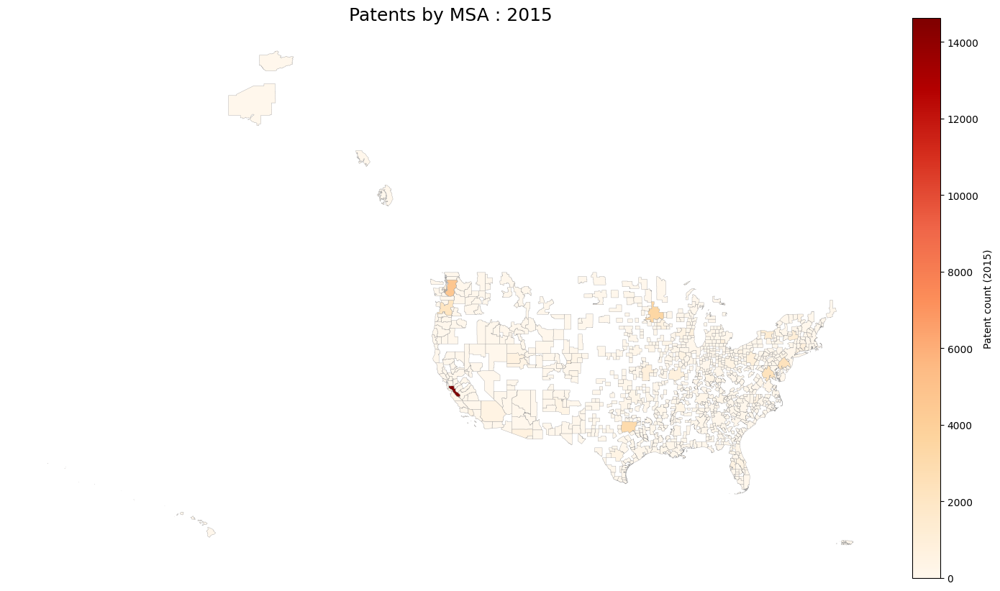
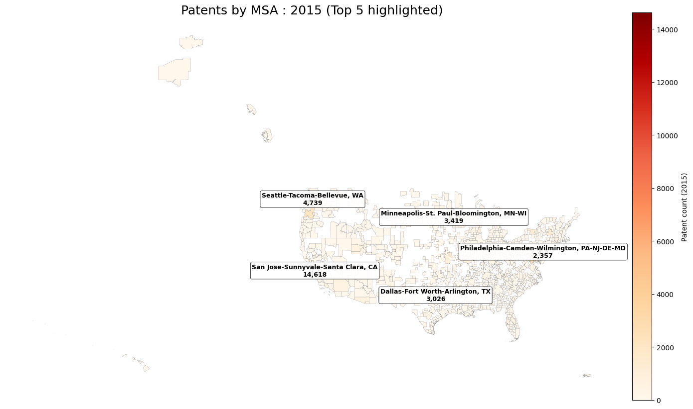

Overview
This visualization displays the distribution of patents across Metropolitan Statistical Areas (MSAs) in the United States for 2015. The data is represented through choropleth maps, where the color intensity indicates the number of patents in each region. Lighter shades represent lower patent counts, while darker shades indicate higher concentrations of patent activity.
View 1: Complete Choropleth Map
Full overview of all MSAs

View 2: Top 5 MSAs Highlighted
Focus on leading patent regions

Key Insights
Innovation Hotspots: Patent activity is highly concentrated in a small number of MSAs. The top 5 regions in this dataset include:
- San Jose–Sunnyvale–Santa Clara, CA: 14,618 patents
- Seattle–Tacoma–Bellevue, WA: 4,739 patents
- Minneapolis–St. Paul–Bloomington, MN-WI: 3,419 patents
- Dallas–Fort Worth–Arlington, TX: 3,026 patents
- Philadelphia–Camden–Wilmington, PA-NJ-DE-MD: 2,357 patents
Distribution characteristics: The patent counts are strongly right-skewed — a handful of metro areas contain a large share of total patents. This makes linear color scales appear very light for most areas. Consider using a log scale, quantile bins, or percentile-based normalization to improve visual contrast.
Data Source: US Patent and Trademark Office (USPTO) patent grant data aggregated by Metropolitan Statistical Area. The boundaries are from the U.S. Census Bureau cartographic boundary files.
Summary
These two maps give a clear picture of how patents were distributed across U.S. metropolitan areas in 2015. The first map highlights the top five MSAs, making it easy to see which regions led the country in innovation. Unsurprisingly, San Jose–Sunnyvale–Santa Clara, CA (Silicon Valley) stands far above the rest, with 14,618 patents—an enormous gap compared to every other area. The next highest regions, including Seattle, Minneapolis–St. Paul, Dallas–Fort Worth, and Philadelphia, each contribute strong patent numbers but still trail Silicon Valley by a wide margin. Their strengths reflect regional industries like software, medical technology, telecom, and pharmaceuticals.
The second map steps back and shows all MSAs, giving a broader sense of the national landscape. Here, it becomes even more noticeable how concentrated patent activity is. Only a small handful of regions are shaded more intensely, mainly along the West Coast, the Northeast, and parts of the Midwest. Much of the country shows relatively low patent output, indicating that innovation tends to cluster in places with strong tech ecosystems, research institutions, and high-skilled workers.
Viewed together, the two maps show not only which cities lead in innovation, but also how unevenly that innovation is spread across the U.S. They highlight a landscape where a few powerful hubs dominate patent production, while most regions contribute at a more modest level.